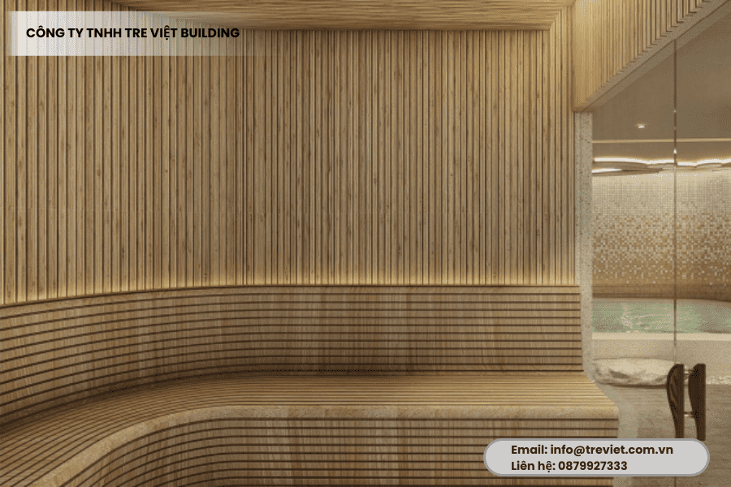
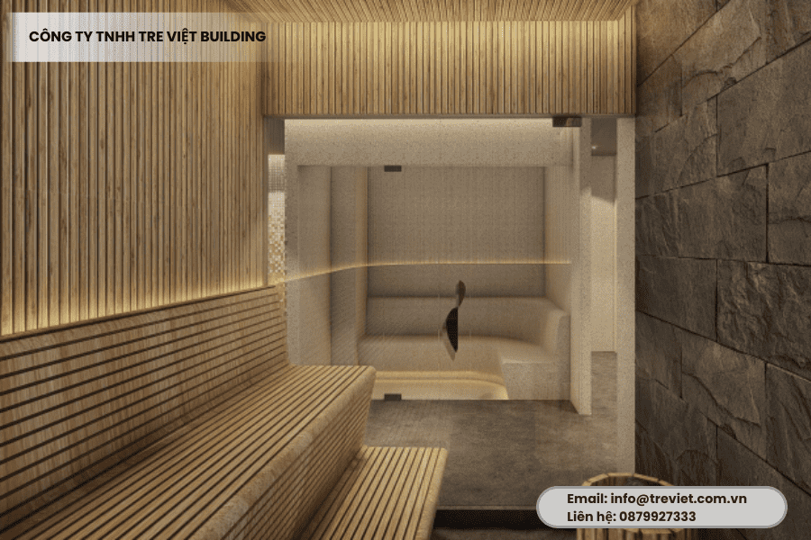
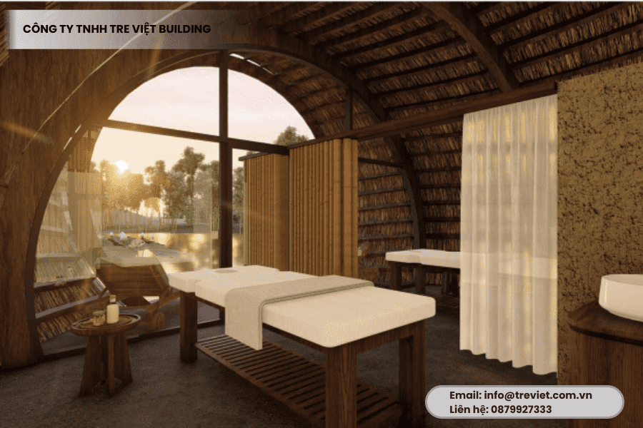
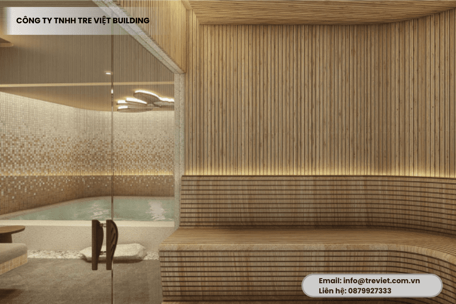

Trong bối cảnh mà ốp tường tre trúc đã, đang trở thành một xu hướng trang trí được yêu thích trong thiết kế nội – ngoại thất, thì việc lựa chọn ĐÚNG đơn vị thi công uy tín chính là yếu tố quyết định đến chất lượng công trình. Thực tế, có không ít khách hàng đã rơi vào tình trạng thi công sai kỹ thuật, không đảm bảo tính thẩm mỹ. Từ đó dẫn đến chi phí sửa chữa phát sinh, ảnh hưởng không gian và doanh thu, lợi nhuận.
Vậy, top 5 lưu ý cần biết khi chọn đơn vị thi công ốp tường tre trúc bạn cần biết là gì? Đâu là địa chỉ đáng tin cậy để gửi gắm công trình của bạn? Theo dõi ngay bài viết của Tre Việt Building để được giải đáp.
Vì sao việc chọn đúng đơn vị thi công ốp tường tre trúc lại quan trọng?
Giữa thế giới kiến trúc hiện đại đang ngập tràn vật liệu nhân tạo, tre trúc hiện lên như một làn gió mộc mạc, tinh tế, mang đến sự cân bằng nhẹ nhàng. Dù trong không gian nghỉ dưỡng hay nhà ở, đô thị, ốp tường tre trúc vẫn được ưa chuộng nhờ vẻ đẹp tự nhiên, độ bền cao, tính thẩm mỹ linh hoạt và tinh thần sống xanh thời thượng.
Ốp tường tre trúc tưởng chừng như là đơn giản. Thế nhưng thực tế, để thi công được những công trình này cần đòi hỏi chuyên môn, tay nghề và kinh nghiệm xử lý vật liệu. Một đơn vị không có đủ chuyên môn sẽ dẫn đến những vấn đề rất nghiêm trọng sau:
- Tre trúc bị cong vênh, bị nứt do kỹ năng, kinh nghiệm xử lý kém và thời gian xử lý chưa đạt.
- Mặt tường không được đồng đều, ốp lệch và mất tính thẩm mỹ
- Mối nối không chắc chắn, rời rạc, rất dễ bung chỉ sau một thời gian ngắn
- Sử dụng nguyên liệu kém chất lượng dẫn đến công trình nhanh xuống cấp
Trong khi đó, một đội ngũ chuyên nghiệp không chỉ đảm bảo thi công chính xác, mà còn mang đến những sự tư vấn, chia sẻ thiết kế phù hợp. Đặc biệt là xử lý kỹ thuật chuyên sâu và tối ưu chi phí tổng thể cho khách hàng, đối tác.
Vậy đâu là lưu ý khi chọn đơn vị thi công mà bạn cần biết?
Những lưu ý quan trọng khi chọn đơn vị thi công ốp tường tre trúc

Trước khi tìm hiểu, lựa chọn, quyết định ký hợp đồng thi công, bạn cần lưu ý những điểm sau đây:
Không phải ai cũng hiểu tre
Bởi tre là vật liệu tự nhiên, có tính co ngót, cong vênh theo thời tiết. Nếu không được xử lý kỹ, tre rất dễ bị mối mọt, nứt hay xuống màu. Vậy nên, bạn cần tìm đơn vị có kinh nghiệm xử lý, thi công vật liệu tre chuyên nghiệp. Tránh nhầm lẫn với những đội thi công nội thất đơn thuần.
Kiểm tra các dự án đã thực hiện
Một đơn vị uy tín, chuyên nghiệp thường có hồ sơ năng lực rõ ràng. Đi cùng với đó là hình ảnh công trình thực tế được sử dụng cho mục đích tham khảo. Và chắc chắn rồi, khách hàng nên ưu tiên, lựa chọn những đơn vị đã có kinh nghiệm trong việc thi công các công trình lớn, các công trình yêu cầu độ khó, độ phức tạp cao.
Yếu tố thiết kế và phối cảnh
Ốp tường tre trúc không đơn thuần chỉ là việc gắn tre lên tường. Mà quan trọng, nó phải được thiết kế sao cho hài hòa với tổng thể không gian. Đảm bào phù hợp với ánh sáng, màu sắc, phong cách kiến trúc gia chủ hướng đến. Một đơn vị chuyên nghiệp sẽ nhiệt tình tư vấn phối cảnh cho khách, hướng dẫn bố cục hợp lý. Qua đó giúp công trình không chỉ đẹp, mà còn có chiều sâu thẩm mỹ.
Yêu cầu về vật liệu, kỹ thuật và tiến độ
Hãy đặt các câu hỏi như sau:
- Tre có được xử lý chống mối mọt hay chưa?
- Sử dụng loại nẹp gì, có dùng sơn phủ bảo vệ hay không?
- Quy trình bắn đinh, cố định tre liệu có chắc chắn?
- Bao lâu thì đơn vị có thể hoàn thành công trình?
- Bảo hành như thế nào?
Và tất cả những câu hỏi này cần làm rõ bằng văn bản, hình ảnh, không nên chỉ dừng lại ở việc trao đổi bằng miệng.
Giá rẻ chưa chắc đã tốt
Đừng vội chốt đơn vị báo giá thấp nhất. Hãy đánh giá chất lượng thi công, độ hoàn thiện, chính sách bảo hành, hậu mãi. Một công trình được đầu tư bài bản từ ban đầu giúp bạn tiết kiệm chi phí sửa chữa, cải tạo về sau.
Tre Việt Building – Chuyên gia thi công ốp tường tre trúc uy tín hàng đầu

Khi bạn đã biết điều quan trọng nhất là chọn đúng đơn vị thì chắc chắn Tre Việt Building là cái tên không thể bỏ qua. Chúng tôi là đơn vị đi đầu trong thi công – thiết kế công trình tre trúc chuyên nghiệp – sáng tạo – tận tâm!
Vậy vì sao Tre Việt Building được khách hàng tin tưởng?
Chuyên sâu trong lĩnh vực tre trúc
Chúng không không làm đại trà, chúng tôi tập trung phát triển và chuyên môn hóa trong thi công các hạng mục tre, trúc, ốp tường, làm vách ngăn, cổng chào, mái nhà, bàn ghế, tiểu cảnh sân vườn,… Mỗi một cây tre qua tay chúng tôi đều được xử lý kỹ càng. Đảm bảo vật liệu được chống mối mọt, sấy khô, làm sạch, chọn màu kỹ lưỡng.
Đội ngũ tay nghề cao và quy trình bài bản
Mỗi một công trình đều được thực hiện bởi một đội ngũ lành nghề, có kinh nghiệm lâu năm. Quan trọng hơn, họ được đào tạo chuyên sâu trong thi công vật liệu tre trúc tự nhiên. Chúng tôi làm việc theo quy trình chuẩn: Khảo sát thực tế – Lên thiết kế 2D/3D – Duyệt phương án – Thi công – Bàn giao đúng tiến độ.
Xưởng sản xuất riêng
Tre Việt Building hiện đang sở hữu xưởng sản xuất trực tiếp tại TP.HCM. Đó là lý do mà chúng tôi có thể chủ động về nguồn vật liệu, thời gian sản xuất, kiểm soát chất lượng, giảm thiểu chi phí trung gian.
Tư vấn thiết kế theo không gian riêng biệt

Chúng tôi không thiết kế “dập khuôn”. Mỗi một công trình, chúng tôi đề xuất bản thiết kế sao cho phù hợp với không gian, đảm bảo tính hài hòa, sáng tạo. Làm thế nào để thể hiện được gu thẩm mỹ riêng biệt của khách hàng.
Chế độ bảo hành và hậu mãi
Chúng tôi cam kết bảo hành từng hạng mục thi công. Tre Việt Building bảo trì định kỳ, đồng hành cùng công trình xuyên suốt quá trình sử dụng!
Bạn có thể tự ốp tường tre trúc tại nhà không?
Nếu như bạn thích DIY và các không gian ốp nhỏ như góc ban công, bạn có thể thử. Một số bước cơ bản đó là:
- Đo kích thước, chuẩn bị nẹp gỗ cố định
- Cắt tre theo kích thước, cố định vào nẹp bằng súng bắn đinh
- Phun sơn bảo vệ, xử lý thẩm mỹ các mối nối.
Thế nhưng, những bước này chỉ áp dụng cho các góc nhỏ lẻ ở trong gia đình. Nếu bạn hướng đến một công trình BỀN – ĐẸP – HOÀN HẢO như là nhà hàng, resort, quán cafe, spa,… việc lựa chọn ĐÚNG đơn vị thi công là cần thiết. Hãy để Tre Việt Building đồng hành cùng bạn. Chúng tôi sẽ giúp bạn có được công trình như ý, tiết kiệm thời gian, công sức, đảm bảo chất lượng vượt trội!
Và đừng để những chi tiết nhỏ làm hỏng tổng thể không gian. Mỗi một mảng tường tre trúc đẹp không chỉ đến từ vật liệu tốt, mà còn phải có tay nghề, có gu, có kỹ thuật của đơn vị thi công chuyên nghiệp!
Tre Việt Building – Biến vật liệu truyền thống thành không gian hiện đại, đầy tính nghệ thuật. Liên hệ để được tư vấn ngay hôm nay!
Thông tin liên hệ:
CÔNG TY TRÁCH NHIỆM HỮU HẠN TRE VIỆT
BUILDING
Địa chỉ: 917 Phạm Văn Đồng, Phường Linh Xuân, Thành phố
Hồ Chí Minh
Nhà máy sản xuất: Phú Hợp B, Xã Phú Lâm, Đồng Nai.
Website: tretruc.com.vn
Điện thoại – Zalo: 093.123.5757
Email: info@treviet.com.vn – treviet23@gmail.com